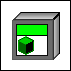

Constant value includes broken or missing LabVIEW class
This block diagram constant has a problem with its default value. The value of the constant includes data from a LabVIEW class that is missing or has errors. The following example indicates a problem with a the default value of a constant.

To fix this issue, you must complete one of the following:
Resolve the problems with the LabVIEW class.
Copy data from a control or indicator that is not broken, then right-click the broken constant and select Data Operations»Paste Data to change the value of this constant.